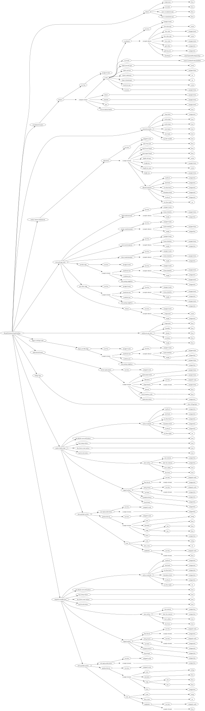

| Field Name | Field Type | Field Constraints | Field Notes |
|---|---|---|---|
| climate | BiomeClimateData | ||
| consolidated features | BiomeConsolidatedFeaturesData | ||
| mountain params | BiomeMountainParamsData | ||
| surface material adjustments | BiomeSurfaceMaterialAdjustmentData | ||
| overworld gen rules | BiomeOverworldGenRulesData | ||
| multinoise gen rules | BiomeMultinoiseGenRulesData | ||
| legacy world gen rules | BiomeLegacyWorldGenRulesData | ||
| replacement biomes | BiomeReplacementsData | ||
| Village Type | enum VillageType | ||
| surface builder data | BiomeSurfaceBuilderData | ||
| subsurface builder data | BiomeSurfaceBuilderData |